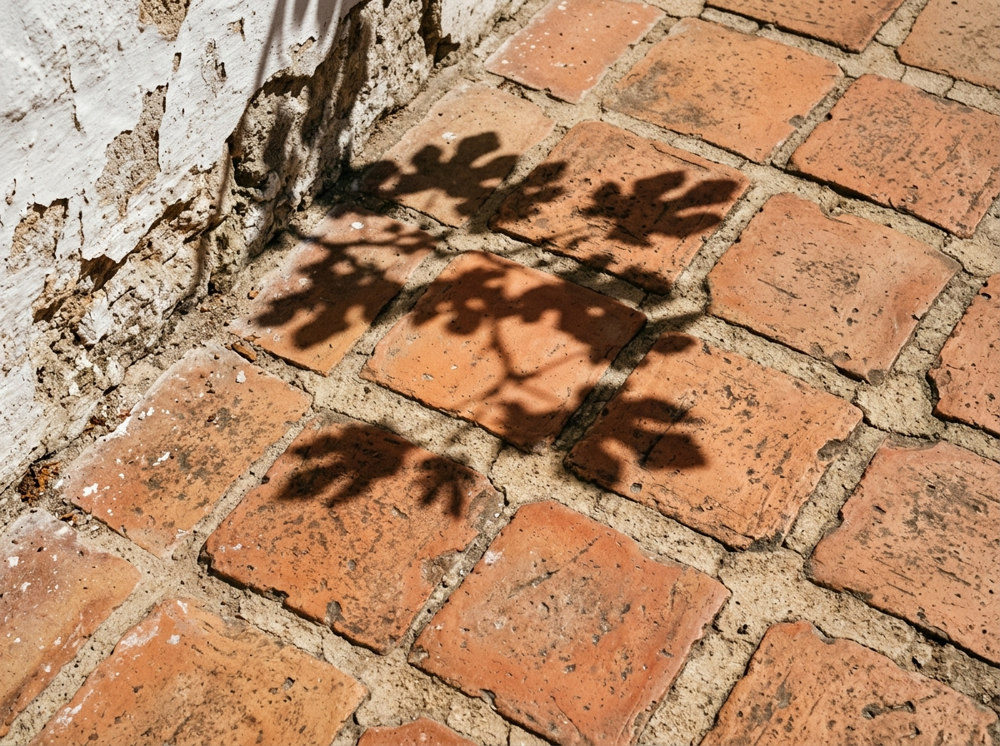
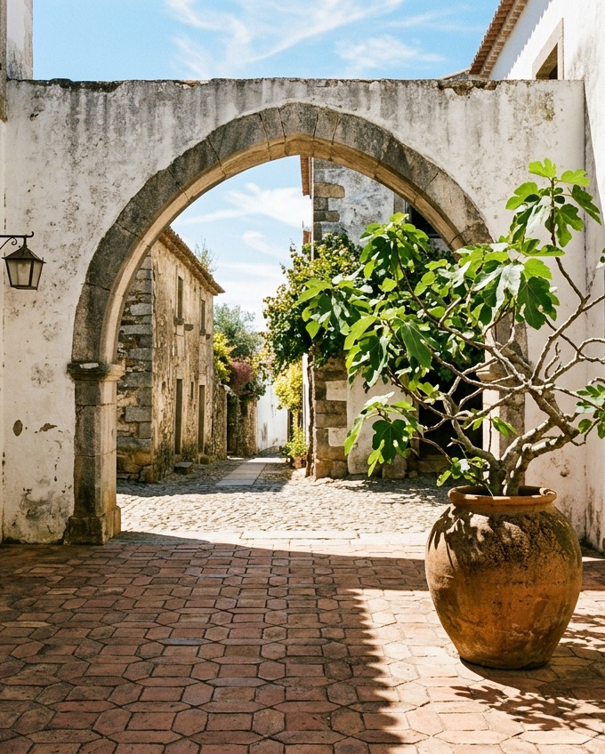

Pátio das Flores
A restored historic stone courtyard featuring arched openings, handmade terracotta tiles, and a central fig tree.

The restored courtyard peristyle looking outward toward the southern garden entrance.
Conserving memory,
inhabiting silence.
Located in the UNESCO World Heritage precinct of Évora, Pátio das Flores is an exercise in surgical architectural restraint. Rather than imposing contemporary structural gestures upon centuries of historical layering, the intervention focused on unburdening the original stone masonry from decades of incompatible cementitious patches.
The perimeter walls were re-pointed using breathable slaked lime mortars formulated from local aggregates, allowing the stone to breathe and shed the dry heat characteristic of the Alentejo summers. The courtyard floor was re-laid with hand-struck terracotta tiles from regional kilns, arranged on a permeable sand bed to regulate natural ground moisture.
A single native fig tree anchors the center of the court, casting evolving lacework shadows across the whitewashed facades and creating a tempered microclimate for daily dwelling, gatherings, and contemplative rest.

